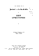

| Fundamentals of Data Structures in C | ||
|---|---|---|
| Author: | Ellis Horowitz, Sartaj Sahni | |
| Publisher: | Silicon Press | |
| Edition: | 2nd Edition | |
| E-Book: | Download E-Book | |
| Theory and problems of Data Structures | ||
|---|---|---|
| Author: | Schaum’s Outline Series |  |
| Publisher: | McGraw Hill Book | |
| E-Book: | Download E-Book | |
| Data Structure using c | ||
|---|---|---|
| Author: | C. Aaron M. Tanenbaum, Yedidyah. Langsam | |
| Publisher: | PHI | |
| E-Book: | Download E-Book | |